ECCO-049 · 27 October 2026 · C03 proposal recorded; report only
Keep the shots. Choose what becomes shared.
The completed previs is the baseline. The housing shape matches across the inspected sources. The useful differences are the finish, environment, explanatory views and behavior. No scenes have been edited.
C03 report proposal: combine the well environment and formation into one modular shared environment, with controls for rock, borehole variants, casing, cement, mud and wider ground context. Each scene uses the parts it needs while preserving its approved camera, motion, lighting and cutaways.
C03 replaces the earlier keep-local recommendation. Other component choices remain proposals. No environment build or scene migration is authorized; original native scenes remain preserved.
Component choices and proposals
| Component | Choice |
|---|
| ECCO body and closures | Retain |
| Connected BHA, bit and joints | Retain / keep local |
| Surface, formation and borehole | Propose one modular shared environment — report only |
| Casing, cement, channel and wear | Combine later / keep display local |
| Fluid, metal finish and lighting | Polish proposal / keep local |
| Pulse, contact, echo and acquisition | Retain shared semantics / keep scores local |
| Hydraulic flow and cuttings | Retain S05 / combine interface later |
| Reconstruction, amplitude, map and report | Keep local / combine conventions later |
| Labels, studio hero and ending | Keep local |
C01 · ECCO body and closures
Proposal: Retain
One product shape already underlies the film. Keep each approved material/camera treatment while selecting a reusable finish separately.
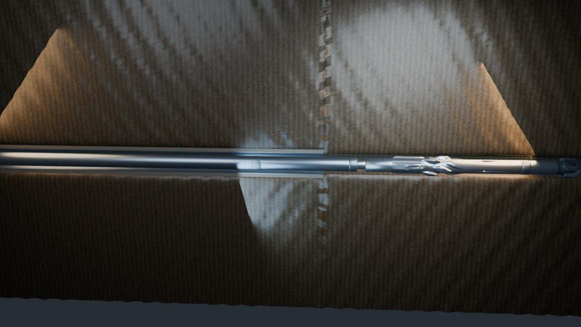
T44 BHA v007 | wide connection inspectionExact source
04-Production/Records/Tasks/T-044/Previews/Revision_v007/connection_wide_v003.png
Native: 04-Production/Records/Tasks/T-044/Revision_v007/Scenes/connection_wide_v003.blend
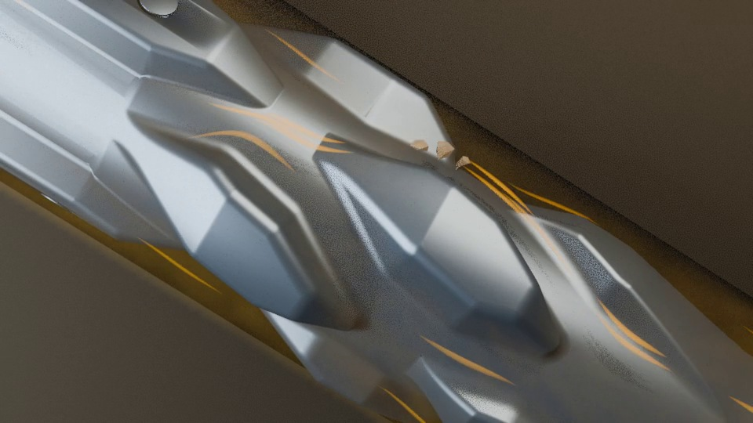
S05 v020 | native f205Exact source
05-Previs/Section-05_Hydraulic-Enhancement/Camera-Proof_v020/Previews/S05_continuous-camera_v020.mp4
Native: 05-Previs/Section-05_Hydraulic-Enhancement/Camera-Proof_v020/Scenes/S05_continuous-camera_v020.blend
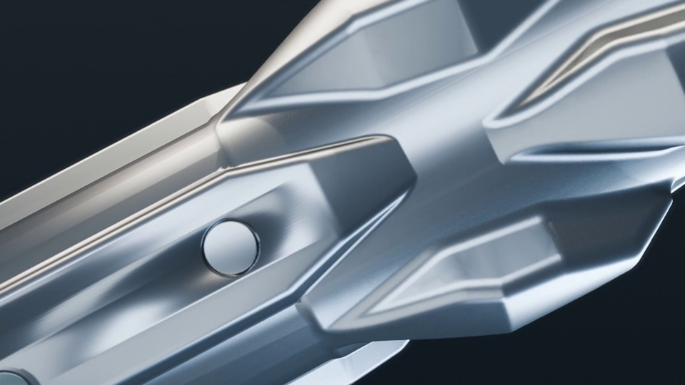
S07 v006 | native f30Exact source
04-Production/Shots/S07/Sequence_v006/Previews/S07_Monumental-Precision_v006.mp4
Native: 04-Production/Shots/S07/Sequence_v006/Scenes/S07_Monumental-Precision_v006.blend
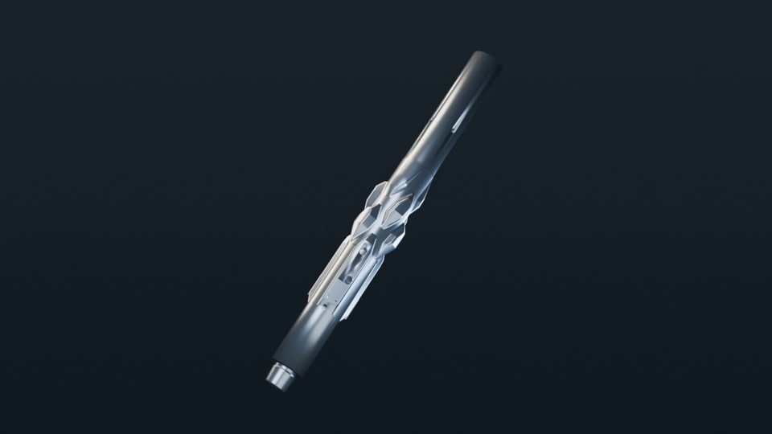
S07 v006 | native f160Exact source
04-Production/Shots/S07/Sequence_v006/Previews/S07_Monumental-Precision_v006.mp4
Native: 04-Production/Shots/S07/Sequence_v006/Scenes/S07_Monumental-Precision_v006.blend
Observed: S01/S02 link film v002. S04 keeps linked source libraries and local transparent/edge-display derivatives. S05/S06/S07 own local housing and presentation materials. All inspected housing coordinate/topology hashes match, 348876 vertices.
Reference: ECCO/ECCO_film_v002.blend; retain T5 plugged v002 as provenance
Temporary caps/covers/plugs and 2.400m imported source remain; no new shoulder datum, mud-sensor coordinate or engineering approval.
C02 · Connected BHA, bit and joints
Proposal: Retain / keep local
Keep v007 as the reusable connected assembly; preserve current simple/local string and all existing cropping until a component is explicitly selected.
T44 BHA v007 | wide connection inspectionExact source
04-Production/Records/Tasks/T-044/Previews/Revision_v007/connection_wide_v003.png
Native: 04-Production/Records/Tasks/T-044/Revision_v007/Scenes/connection_wide_v003.blend
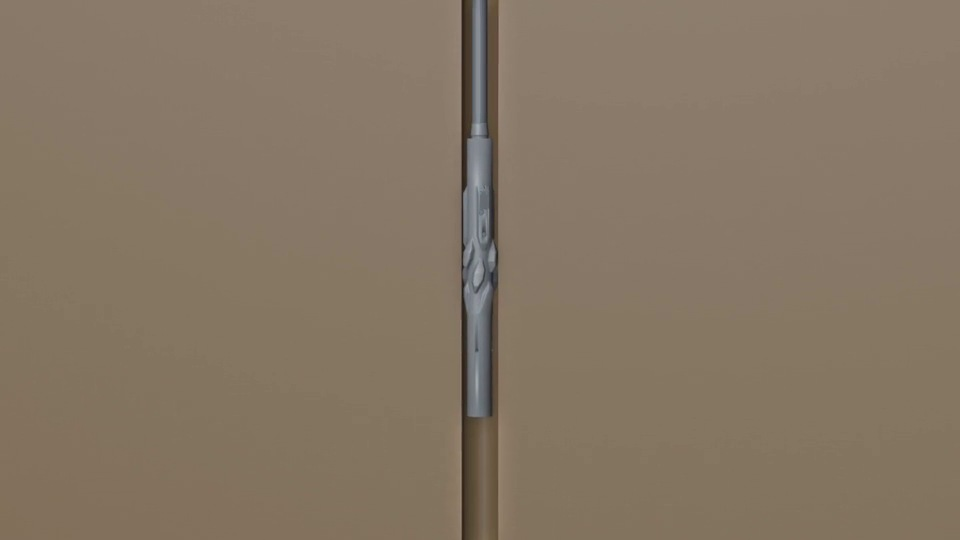
S01 Gentle 10s | native f220Exact source
05-Previs/Section-01_Continuous-Descent/v001/Gentle-10s-Finish/Previews/S01_gentle-10s-finish.mp4
Native: 05-Previs/Section-01_Continuous-Descent/v001/Gentle-10s-Finish/Scenes/S01_gentle-10s-finish.blend
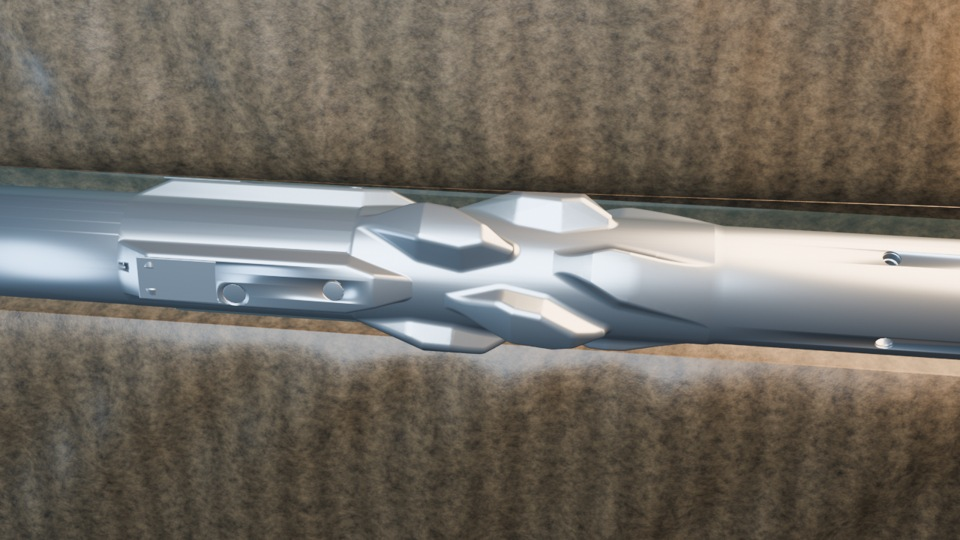
T44 environment v009 | reuse AExact source
04-Production/Records/Tasks/T-044/Previews/Revision_v007/Reuse_A_v002.png
Native: 04-Production/Records/Tasks/T-044/Revision_v007/Scenes/Reuse_A_continuity_v002.blend
Observed: S01/S02 have local Drill string - axis and no BHA library. S04 loads v007/v006 and local adapters, collars, PDC pieces and design edges. Shared v007 adds adjustable continuation/joint to v006; not a complete string to surface.
Reference: BHA/BHA_film_v007.blend with frozen v006 and film v002 dependencies
Generic authored bit/adapters/continuation are illustrative. Exact thread fit, operating assembly and stage/end identities remain unverified.
C03 · Surface, formation and borehole
Report proposal only: Propose one modular shared environment — report only
One modular environment can supply close well detail and broader surrounding ground across scenes. Select rock, borehole variants, casing, cement, mud, extent and detail per scene instead of maintaining overlapping environment builds.
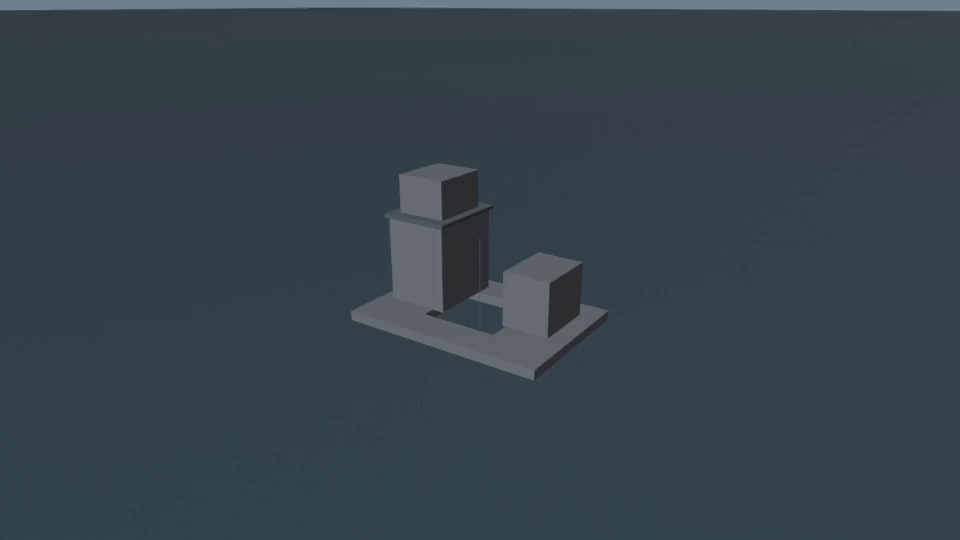
S01 Gentle 10s | native f1Exact source
05-Previs/Section-01_Continuous-Descent/v001/Gentle-10s-Finish/Previews/S01_gentle-10s-finish.mp4
Native: 05-Previs/Section-01_Continuous-Descent/v001/Gentle-10s-Finish/Scenes/S01_gentle-10s-finish.blend
Exact source
04-Production/Records/Tasks/T-044/Previews/Revision_v007/Reuse_A_v002.png
Native: 04-Production/Records/Tasks/T-044/Revision_v007/Scenes/Reuse_A_continuity_v002.blend
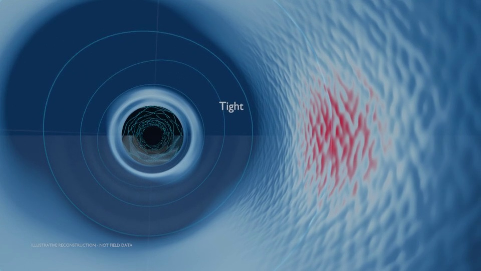
S03 v036 | native f220Exact source
05-Previs/Section-03_The-Earth-Revealed/v036/Previews/S03_v036_final_24fps.mp4
Native: 05-Previs/Section-03_The-Earth-Revealed/v036/Scenes/S03_second-last-nominal-label_v036.blend
Exact source
05-Previs/Section-05_Hydraulic-Enhancement/Camera-Proof_v020/Previews/S05_continuous-camera_v020.mp4
Native: 05-Previs/Section-05_Hydraulic-Enhancement/Camera-Proof_v020/Scenes/S05_continuous-camera_v020.blend
Observed: S01/S02 use local descent/cutaway earth. S03 uses local scientific ground/reconstruction. S04 loads World v009 and cased formation v002. S05 has a local half borehole. Earlier Surface v003 is not linked by any selected previs native.
Reference: Future versioned environment master combining World_environment v009, Formation_context v002 and Formation_cased-section v002; reconcile CasedHole v002 layers and optional Surface v003 context. No new master built.
Owner requested this proposal in the report on 27 October 2026 and explicitly instructed not to combine yet. No implementation is authorized. This replaces the earlier C03 blanket keep-local recommendation at the proposal level only. Illustrative extents/optical access and source dimensions remain explicit; S03/S06 data/reconstruction cases remain separate.
C04 · Casing, cement, channel and wear
Proposal: Combine later / keep display local
The layer source is already shared. Package a future S04 display wrapper only after choosing its channel/wear appearance.
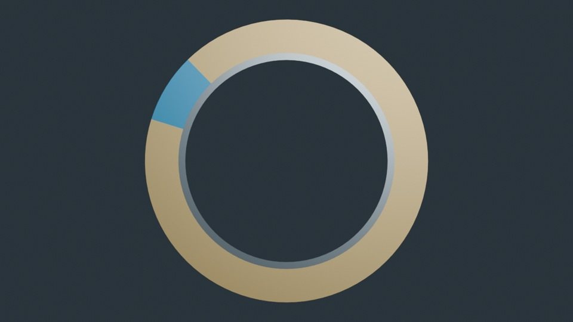
T47 CasedHole v002 | layer section f1Exact source
04-Production/Records/Tasks/T-047/Previews/v012/CasedLayerSection_f001_v012.png
Native: 04-Production/Records/Tasks/T-047/Scenes/CasedLayerSection_v011.blend
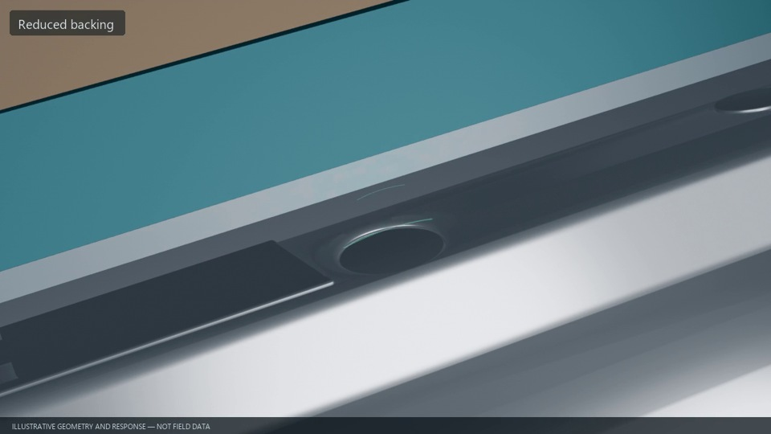
S04 v033 selected | native f216Exact source
04-Production/Shots/S04/S04-A/Previs_v033/Previews/S04_continuous_ABCD_v033.mp4
Native: 04-Production/Shots/S04/S04-A/Previs_v033/Scenes/S04_continuous_ABCD_v033.blend
Exact source
04-Production/Records/Tasks/T-047/Previews/v012/CasedWearSection_f001_v012.png
Native: 04-Production/Records/Tasks/T-047/Scenes/CasedWearSection_v011.blend
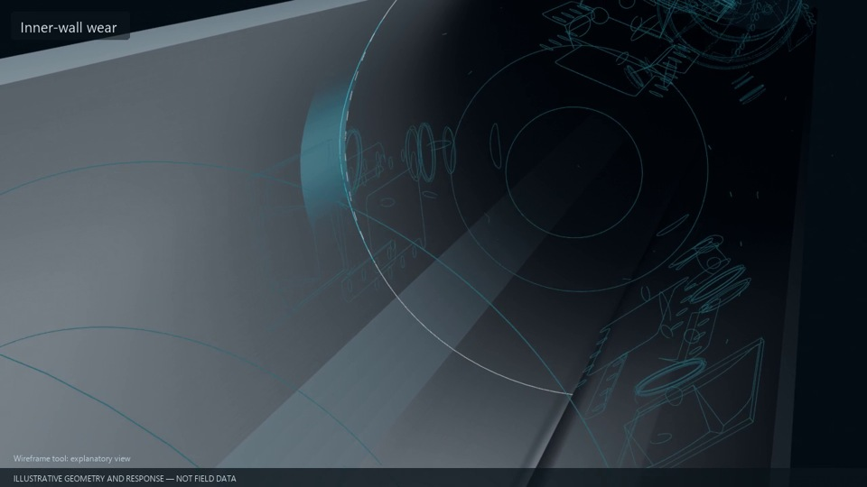
S04 v033 selected | native f365Exact source
04-Production/Shots/S04/S04-A/Previs_v033/Previews/S04_continuous_ABCD_v033.mp4
Native: 04-Production/Shots/S04/S04-A/Previs_v033/Scenes/S04_continuous_ABCD_v033.blend
Observed: S04 links CasedHole v002, cased formation v002 and World v009, then adds local cement windows/channel bounds, source-derived steel viewing section, response bands and transparent product views.
Reference: CasedHole/CasedHole_v002.blend for dimensional layers; preserve S04 v033 local organic channel, windows and reaction display
Selected v033 still has the reported dark-band/pit readability issue. v034 was rejected; no resolution or calibrated wear/bond estimate is claimed.
C05 · Fluid, metal finish and lighting
Proposal: Polish proposal / keep local
Select a common metal/amber direction through actual locked views before extracting shared materials. Keep lights, opacity and optical cutaways local.
S01 Gentle 10s | native f220Exact source
05-Previs/Section-01_Continuous-Descent/v001/Gentle-10s-Finish/Previews/S01_gentle-10s-finish.mp4
Native: 05-Previs/Section-01_Continuous-Descent/v001/Gentle-10s-Finish/Scenes/S01_gentle-10s-finish.blend
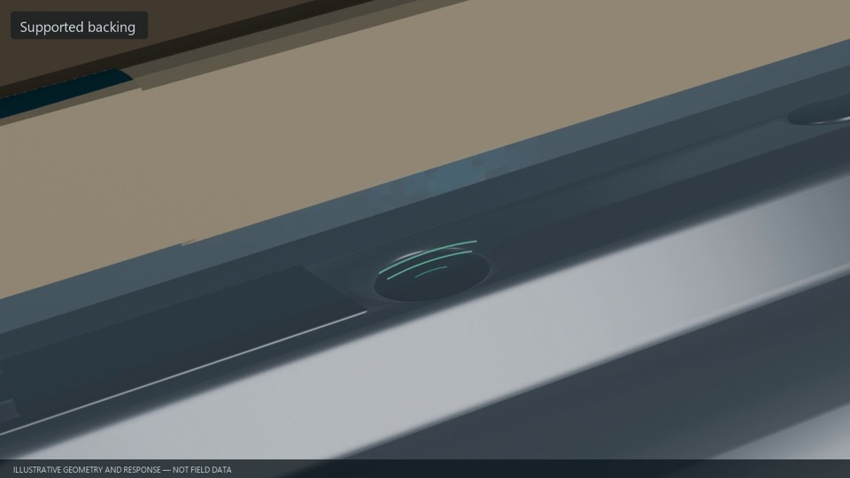
S04 v033 selected | native f90Exact source
04-Production/Shots/S04/S04-A/Previs_v033/Previews/S04_continuous_ABCD_v033.mp4
Native: 04-Production/Shots/S04/S04-A/Previs_v033/Scenes/S04_continuous_ABCD_v033.blend
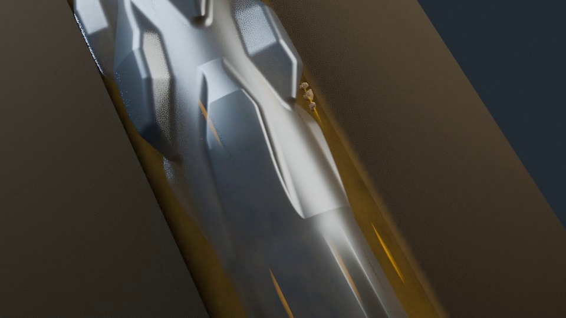
S05 v020 | native f50Exact source
05-Previs/Section-05_Hydraulic-Enhancement/Camera-Proof_v020/Previews/S05_continuous-camera_v020.mp4
Native: 05-Previs/Section-05_Hydraulic-Enhancement/Camera-Proof_v020/Scenes/S05_continuous-camera_v020.blend
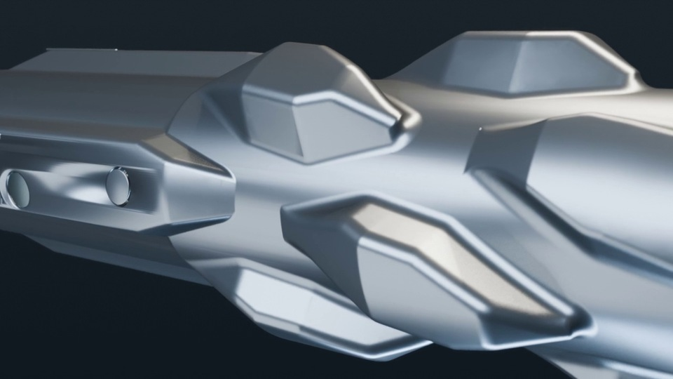
S07 v006 | native f90Exact source
04-Production/Shots/S07/Sequence_v006/Previews/S07_Monumental-Precision_v006.mp4
Native: 04-Production/Shots/S07/Sequence_v006/Scenes/S07_Monumental-Precision_v006.blend
Observed: S01/S02 are Workbench previews. S04 uses local reaction-readable steel/transparency. S05 has amber fluid, mist, mineral cuttings and satin metal. S07 uses separate studio reflection lights and local satin materials.
Reference: Retain S05 amber fluid and S07 satin look as appearance references; no new common master selected
No new shading or rendering performed. Source surface finish/alloy, physical mud opacity and cold-cache render compliance are not certified.
C06 · Pulse, contact, echo and acquisition
Proposal: Retain shared semantics / keep scores local
Retain shared packet/contact prototypes for future reuse; preserve S02's accepted event order and pixel-wall build instead of replacing its animation with a four-second asset demo.
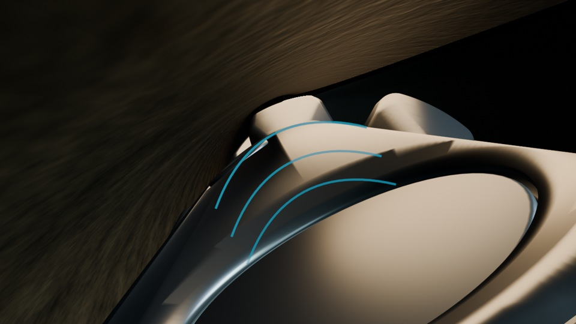
T46 Acoustics v003 | sendExact source
04-Production/Records/Tasks/T-046/Previews/Review_send_v002.png
Native: 04-Production/Records/Tasks/T-046/Scenes/Sensing_reuse_A_v009.blend
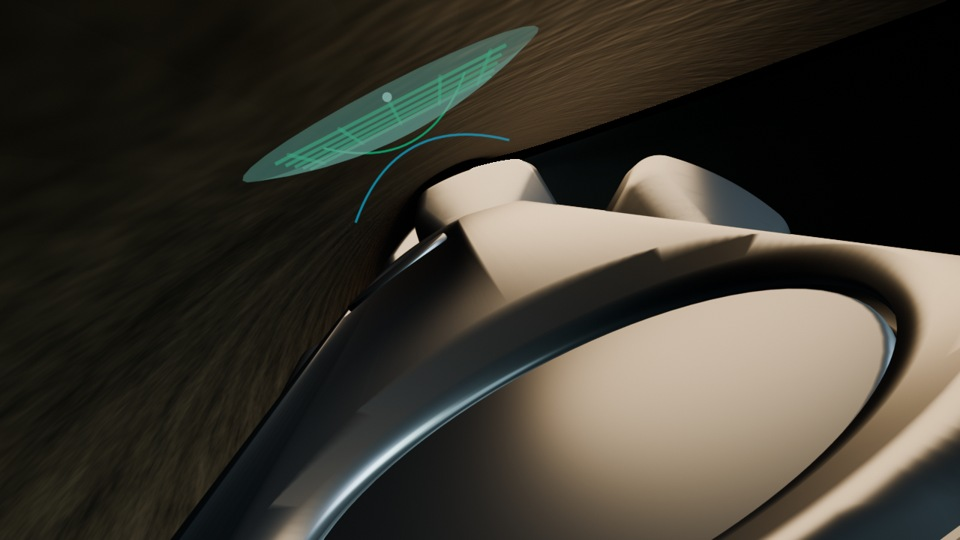
T46 Acoustics v003 | contactExact source
04-Production/Records/Tasks/T-046/Previews/Review_contact_v002.png
Native: 04-Production/Records/Tasks/T-046/Scenes/Sensing_reuse_A_v009.blend
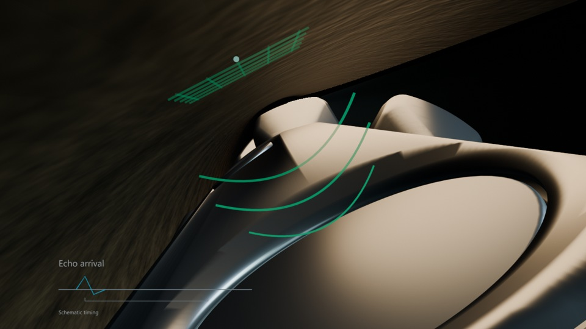
T46 Acoustics v003 | returnExact source
04-Production/Records/Tasks/T-046/Previews/Review_return_v002.png
Native: 04-Production/Records/Tasks/T-046/Scenes/Sensing_reuse_A_v009.blend
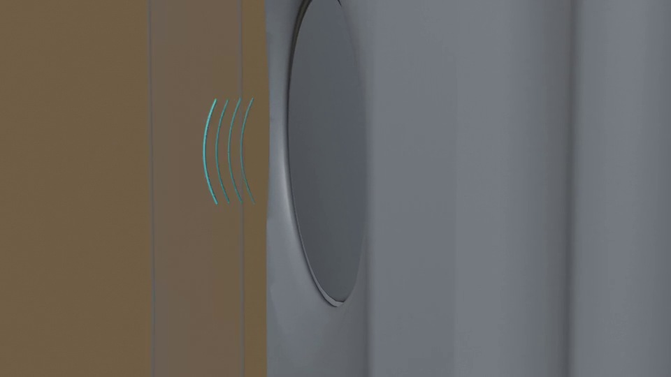
S02 v011 | native f348Exact source
05-Previs/Section-02_Measurement-History/v011/Continuation/Previews/S01-S02_from-07s_v011.mp4
Native: 05-Previs/Section-02_Measurement-History/v011/Continuation/Scenes/S01-S02_continuous_v011.blend
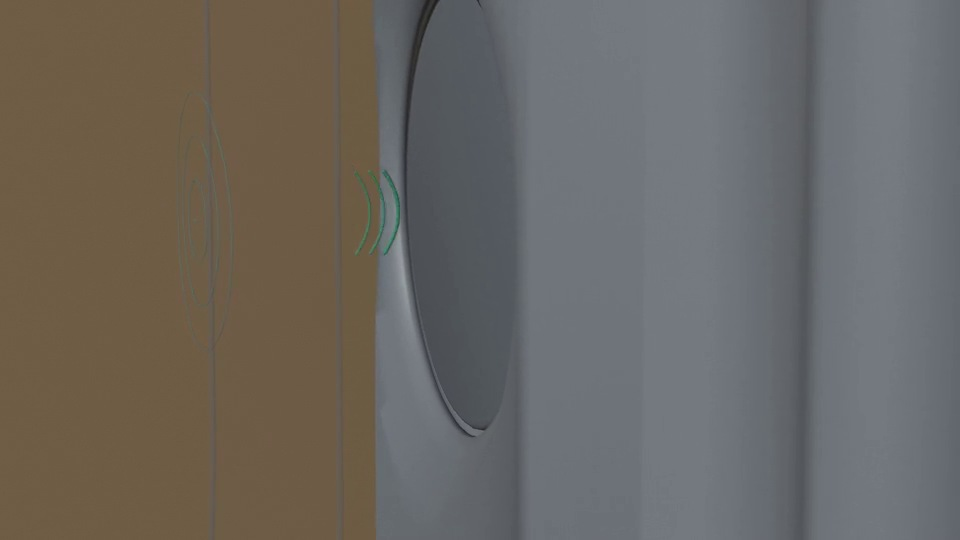
S02 v011 | native f358Exact source
05-Previs/Section-02_Measurement-History/v011/Continuation/Previews/S01-S02_from-07s_v011.mp4
Native: 05-Previs/Section-02_Measurement-History/v011/Continuation/Scenes/S01-S02_continuous_v011.blend
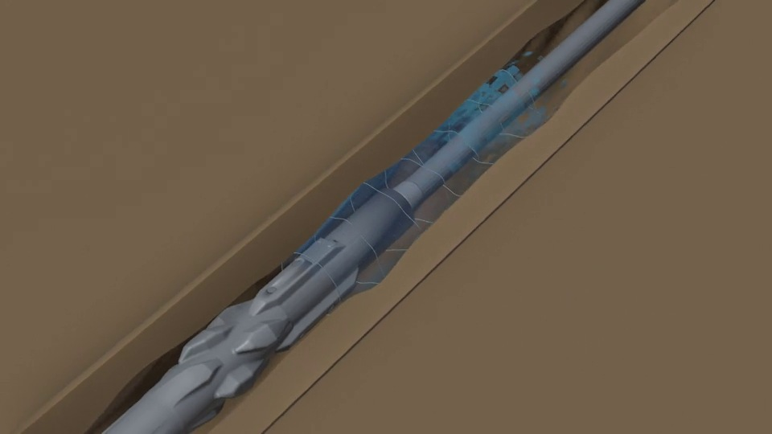
S02 v011 | native f489Exact source
05-Previs/Section-02_Measurement-History/v011/Continuation/Previews/S01-S02_from-07s_v011.mp4
Native: 05-Previs/Section-02_Measurement-History/v011/Continuation/Scenes/S01-S02_continuous_v011.blend
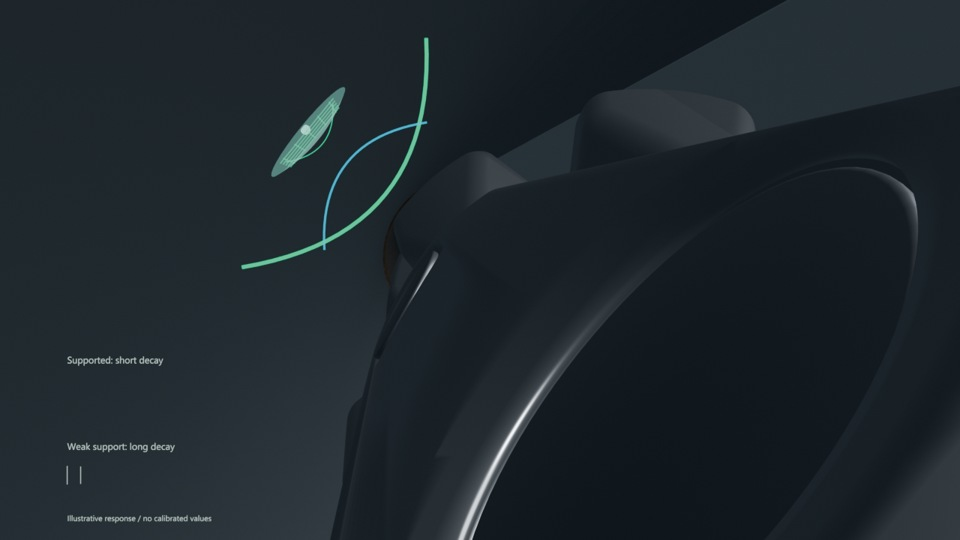
T47 support v012 | f56Exact source
04-Production/Records/Tasks/T-047/Previews/v012/CasedSupport_f056_v012.png
Native: 04-Production/Records/Tasks/T-047/Scenes/CasedSupport_v012.blend
Observed: S02 uses local DW send/echo fronts, contact cues, recorded-wall cells and native reveal graphs, with no Acoustics link. S04 links Acoustics v003 and adds local casing response/reaction graphics and wear cues.
Reference: Acoustics/Acoustics_v003.blend plus S02 v011 native acquisition/reconstruction behavior
Illustrative timing, cap exit convention and optical width; no calibrated sound speed, through-steel view or quantitative casing inference.
C07 · Hydraulic flow and cuttings
Proposal: Retain S05 / combine interface later
The current richer amber treatment was approved. Later extract S05 behavior behind stable visibility/speed controls, rather than reinstating the older sparse demo.
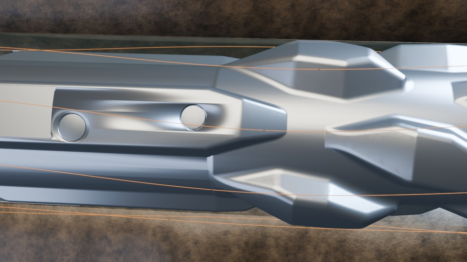
T48 Hydraulics v003 | reuse B f48Exact source
04-Production/Records/Tasks/T-048/Previews/Revision_v007/Flow_B_f0048.png
Native: 04-Production/Records/Tasks/T-048/Scenes/Flow_reuse_B_v006.blend
Exact source
05-Previs/Section-05_Hydraulic-Enhancement/Camera-Proof_v020/Previews/S05_continuous-camera_v020.mp4
Native: 05-Previs/Section-05_Hydraulic-Enhancement/Camera-Proof_v020/Scenes/S05_continuous-camera_v020.blend
Exact source
05-Previs/Section-05_Hydraulic-Enhancement/Camera-Proof_v020/Previews/S05_continuous-camera_v020.mp4
Native: 05-Previs/Section-05_Hydraulic-Enhancement/Camera-Proof_v020/Scenes/S05_continuous-camera_v020.blend
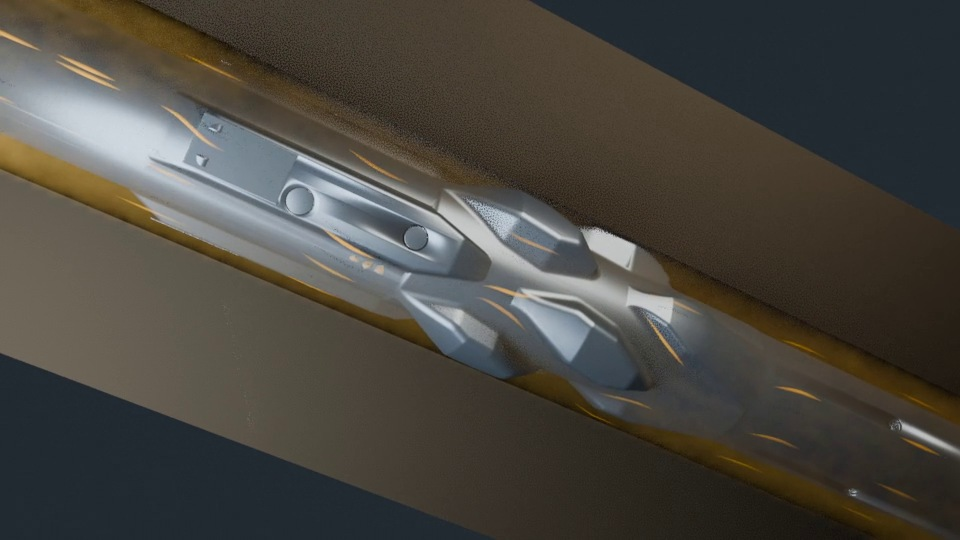
S05 v020 | native f390Exact source
05-Previs/Section-05_Hydraulic-Enhancement/Camera-Proof_v020/Previews/S05_continuous-camera_v020.mp4
Native: 05-Previs/Section-05_Hydraulic-Enhancement/Camera-Proof_v020/Scenes/S05_continuous-camera_v020.blend
Observed: S05 owns local housing, S05_Guide paths, amber fluid/trails and mineral cuttings; it does not link Hydraulics v003. The retained ECCO library entry has no linked object datablocks in that file. Earlier T48 has fine continuous guides, sparse cuttings and a narrow checked centred clearance.
Reference: Current S05 v020 appearance and motion; retain Hydraulics/Hydraulics_v003.blend as the earlier reusable control reference
No CFD, measured velocity/pressure or certified stage-face assignment. T48 clearance numbers apply only to its declared centred pose and do not certify S05 trajectories.
C08 · Reconstruction, amplitude, map and report
Proposal: Keep local / combine conventions later
Share quantity/color/seam conventions only after selecting compatible data contracts; retain case identity and native transformation behavior.
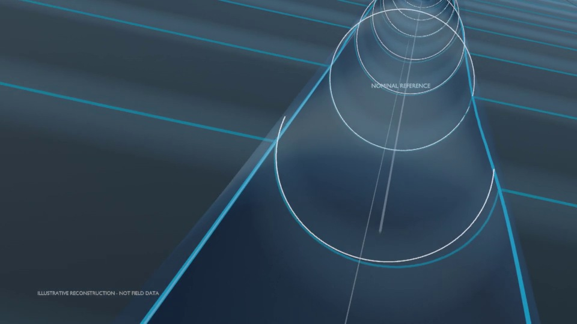
S03 v036 | native f60Exact source
05-Previs/Section-03_The-Earth-Revealed/v036/Previews/S03_v036_final_24fps.mp4
Native: 05-Previs/Section-03_The-Earth-Revealed/v036/Scenes/S03_second-last-nominal-label_v036.blend
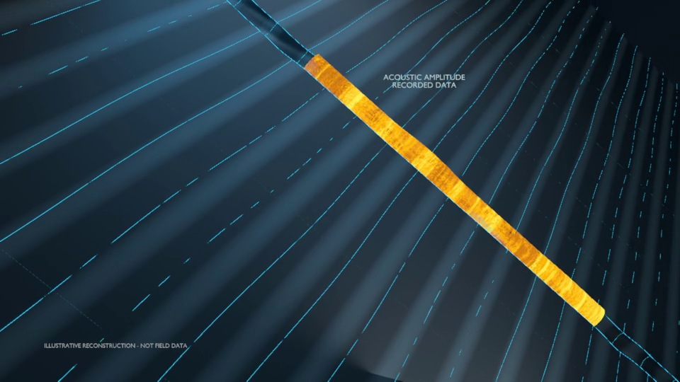
S03 v036 | native f390Exact source
05-Previs/Section-03_The-Earth-Revealed/v036/Previews/S03_v036_final_24fps.mp4
Native: 05-Previs/Section-03_The-Earth-Revealed/v036/Scenes/S03_second-last-nominal-label_v036.blend
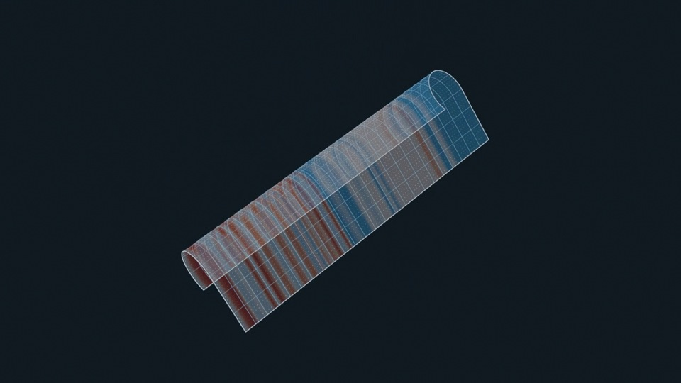
S06 polished v004 | native f140Exact source
04-Production/Studies/S06_Report-Recreation_v004/Previews/S06_cinematic-study_v004_polished.mp4
Native: 04-Production/Studies/S06_Report-Recreation_v004/Scenes/S06_cinematic-study_v004_polished.blend
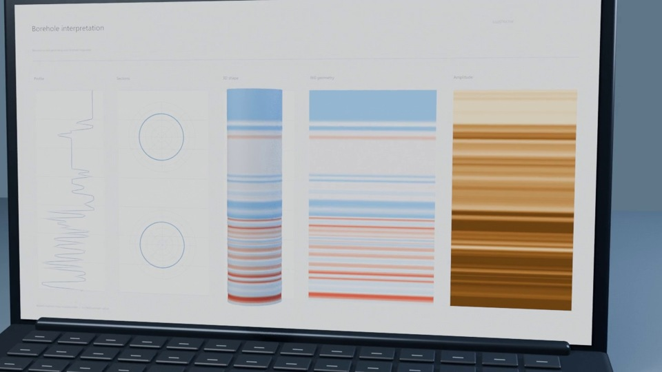
S06 polished v004 | native f260Exact source
04-Production/Studies/S06_Report-Recreation_v004/Previews/S06_cinematic-study_v004_polished.mp4
Native: 04-Production/Studies/S06_Report-Recreation_v004/Scenes/S06_cinematic-study_v004_polished.blend
Observed: S03 has local geometry-derived radius colors and a separate fixed gold amplitude texture. S06 owns indexed geometry/amplitude layers, unwrap animation and an authored laptop/report. These are distinct illustrative cases, not proven same-sample continuity with S03.
Reference: S03 v036 data/display and S06 polished v004 Data/story_field.npz; no unified measurement master found in inspected shared package
No field-log pixels reused in this packet. Report-inspired synthetic content is not ENP3 field output, real Mi-VU measurements or a certified cross-section.
C09 · Labels, studio hero and ending
Proposal: Keep local
Retain each approved information beat; a global HUD/branding package would change the current direction.
S03 v036 | native f60Exact source
05-Previs/Section-03_The-Earth-Revealed/v036/Previews/S03_v036_final_24fps.mp4
Native: 05-Previs/Section-03_The-Earth-Revealed/v036/Scenes/S03_second-last-nominal-label_v036.blend
Exact source
04-Production/Shots/S04/S04-A/Previs_v033/Previews/S04_continuous_ABCD_v033.mp4
Native: 04-Production/Shots/S04/S04-A/Previs_v033/Scenes/S04_continuous_ABCD_v033.blend
Exact source
04-Production/Studies/S06_Report-Recreation_v004/Previews/S06_cinematic-study_v004_polished.mp4
Native: 04-Production/Studies/S06_Report-Recreation_v004/Scenes/S06_cinematic-study_v004_polished.blend
Exact source
04-Production/Shots/S07/Sequence_v006/Previews/S07_Monumental-Precision_v006.mp4
Native: 04-Production/Shots/S07/Sequence_v006/Scenes/S07_Monumental-Precision_v006.blend
Observed: Editable local fonts/labels and report geometry differ by narrative role. S07 has no logo/text closing; it ends in black. Legacy scene custom properties mentioning a logo placeholder are not the visible selected outcome.
Reference: Current S03 spatial labels, S04 minimal response labels, S06 report layout, S07 v006 hero
Installed fonts are dependencies, not redistributed assets. Radzi owns separate logo frame, audio and assembled film timing; the current section allocations total 96s.
Later consolidation
Record selections → freeze geometry identities → extract only chosen material/effect controls → compare copies through locked cameras and motion → benchmark below 5 seconds/frame → return new versions for Radzi review.
Current section allocations total 96 seconds. Radzi owns timing, logo, audio and film assembly. Heavy native/video files remain local. This packet contains actual review imagery and inspected records.